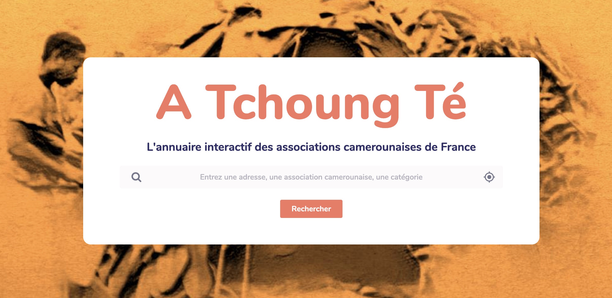
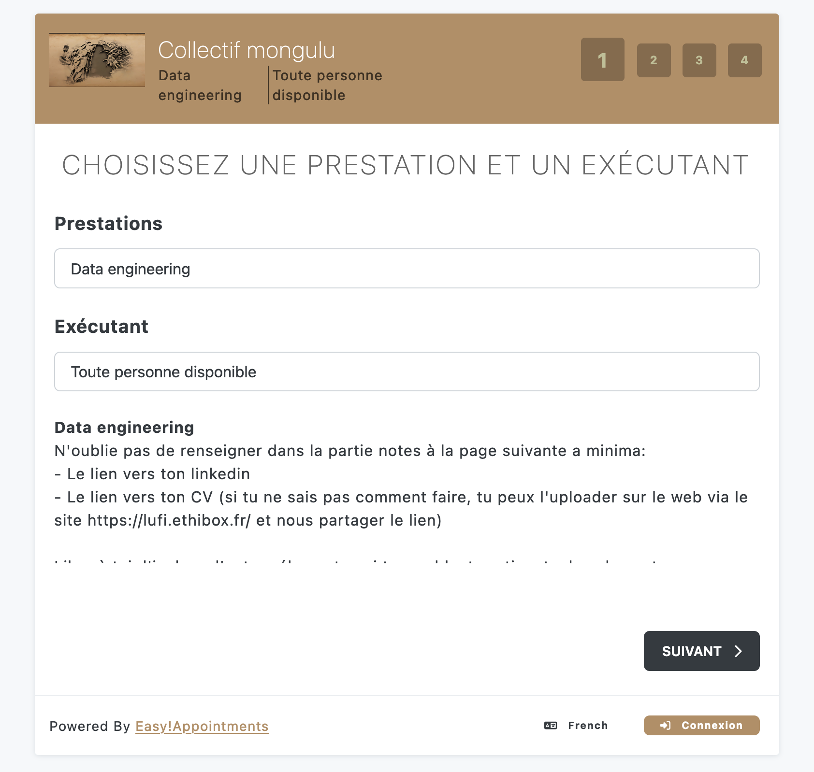
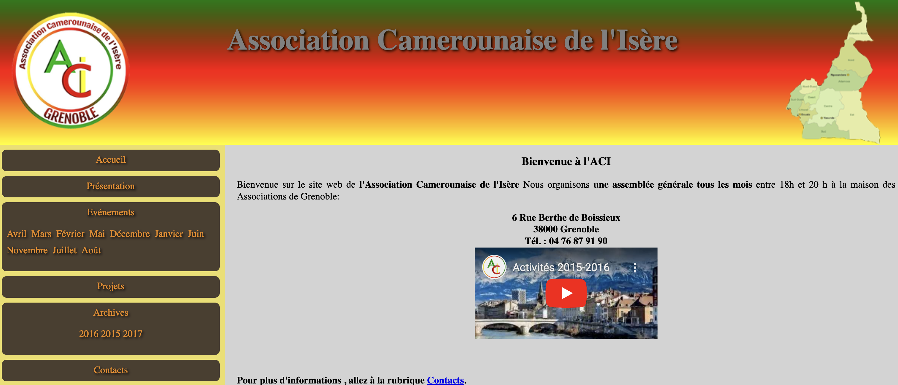

Portefeuille actif
Nos projets
Chaque projet répond à un besoin concret et reste documenté publiquement, avec une logique d’ouverture, de partage et de réutilisation.

Manzi-mfa

Portefeuille actif
Chaque projet répond à un besoin concret et reste documenté publiquement, avec une logique d’ouverture, de partage et de réutilisation.


